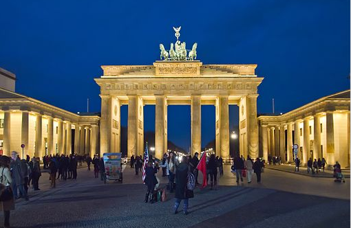

Germany
 Germany is the largest country in Central Europe. It is bordered to the north by Denmark, to the east by Poland and the Czech Republic, to the south by Austria and Switzerland, and to the west by France, Luxembourg, Belgium and the Netherlands. Germany is a federation of 16 states, roughly corresponding to regions with their own distinct and unique cultures.
Germany is one of the most influential European nations culturally, and one of the world's main economic powers. Known around the world for its precision engineering and high-tech products, it is equally admired by visitors for its old-world charm and "Gemütlichkeit" (coziness). If you have perceptions of Germany as simply homogeneous, it will surprise you with its many historical regions and local diversity.
Germany is the largest country in Central Europe. It is bordered to the north by Denmark, to the east by Poland and the Czech Republic, to the south by Austria and Switzerland, and to the west by France, Luxembourg, Belgium and the Netherlands. Germany is a federation of 16 states, roughly corresponding to regions with their own distinct and unique cultures.
Germany is one of the most influential European nations culturally, and one of the world's main economic powers. Known around the world for its precision engineering and high-tech products, it is equally admired by visitors for its old-world charm and "Gemütlichkeit" (coziness). If you have perceptions of Germany as simply homogeneous, it will surprise you with its many historical regions and local diversity.
BerlinBerlin is the capital city of Germany and one of the 16 states of the Federal Republic of Germany. Berlin is the largest city in Germany and has a population of 4.5 million within its metropolitan area and 3.5 million from over 190 countries within the city limits. Berlin is best known for its historical associations as the German capital, internationalism and tolerance, lively nightlife, its many cafes, clubs, bars, street art, and numerous museums, palaces, and other sites of historic interest. Berlin's architecture is quite varied. Although badly damaged in the final years of World War II and broken apart during the Cold War, Berlin has reconstructed itself greatly, especially with the reunification push after the fall of the Berlin Wall in 1989. It is now possible to see representatives of many different historic periods in a short time within the city centre, from a few surviving medieval buildings near Alexanderplatz, to the ultra modern glass and steel structures at Potsdamer Platz. Because of its tumultuous history, Berlin remains a city with many distinctive neighbourhoods. Brandenburger Tor is a symbol of division during the world war, which now shows German reunification. It was built after the Acropolis in Athens and was completed in 1799 as the royal city-gate. Germany was later on divided into east and west, In August 13,1961, East Germans permanently closed the border between East and West. The wall had 45,000 sections of reinforced concrete and included 79 miles of fencing, nearly 300 watchtowers and 250 guard dogs. Still more than 5,000 people escaped to freedom. |